NUDURI ALE PICTORULUI ROM�N
NICOLAE GRIGORESCU
Dup� ce arta rom�neasc� a fost dominat�, mai multe secole, de arta bizantin� �i de religia cre�tin�, cu toate restric�iile lor, nudul a p�truns �n pictura rom�neasc� �i prin opera lui Nicolae Grigorescu.
�n anul 2019 Romfilatelia a introdus �n circula�ie, �n ziua de 15 februarie, emisiunea de m�rci po�tale intitulat� Nuduri �n pictura rom�neasc�, �n care sunt ilustrate cele mai apreciate opere de acest gen ce au ie�it de sub penelul lui Grigorescu.
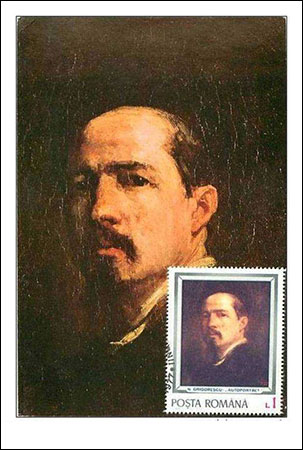
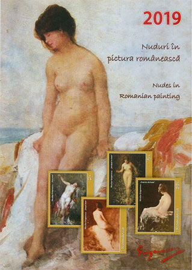
De-a lungul anilor administra�iile po�tale rom�ne�ti au emis mai multe timbre care reproduc operele cele mai cunoscute ale pictorului. Link pe acest site.
�Rar sunt cei dintre pictorii no�tri care s� fi sim�it ad�nc farmecul feminin, acea c�ldur� ce eman� din trupul �i fa�a femeii, acel flux nervos ce str�bate fiin�a ei t�n�r�, spunea George Oprescu.
�n picturile ale c�ror imagini sunt reproduse pe timbre, se reg�sesc modelele care-l atr�geau cel mai mult pe Nicolae Grigorescu, respectiv cele delicate, �nc� neformate, zvelte �i ml�dioase, �n care totul era numai promisiune �i nimic ajuns la maturitate.
S� ne arunc�m o privire la singurul nud a lui Grigorescu reprodus p�n� �n anul 2019 pe un timbru rom�nesc. Este vorba despre timbrul ce reproduce pictura "Nud, sau "Nud la ��rmul m�rii", emis �n 1971. El reapare (vezi mai jos) pe �i ilustra�iile celor dou� noi Plicuri prima zi.
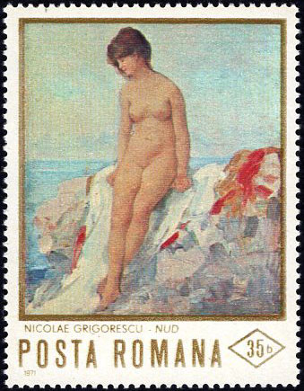
Pe timbrul emis �n 2019, cu valoarea nominal� de 2 lei, este ilustrat� imaginea tabloului Bacanta, cel mai reu�it dintre toate nudurile pe care le-a pictat Nicoale Grigorescu. Este un tablou de dimensiune mijlocie �i a fost pictat cu o pasiune �i o c�ldur� ce s-au transmis �n �ntregime acestei compozi�ii plastice remarcabile. Timbrul cu valoarea de 3 lei reproduce lucrarea Dup� baie, �n care personajul este v�zut din spate, manier� pictural� ce pune mai bine �n valoare linia delicat� a formelor � curbura g�tului �i �ntreaga unduire a corpului.
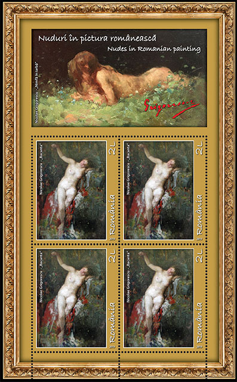
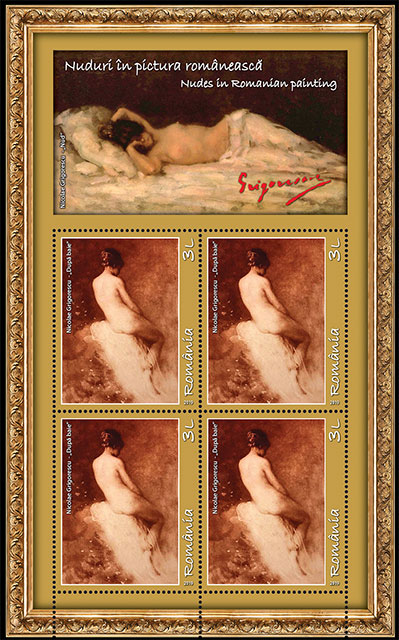
Timbrul cu valoarea de 5 lei, care ilustreaz� pictura Intr�nd �n baie �i timbrul cu valoarea de 19 lei, care red� pictura �nainte de baie, p�streaz� am�ndou� armonia cromatic� �i etalarea cu fine�e a formelor �ntr-o prezentare poetic�, care �mbin� ambian�a peisaj-lumin�, plin� de lirism �i �ndemn la visare.
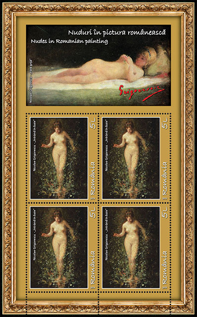
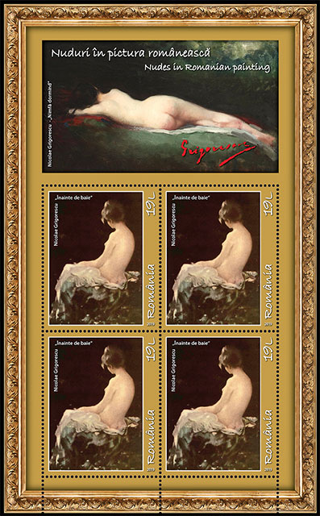
Pe plicul �prima zi� este redat� ca ilustra�ie pictura Nud pe malul m�rii, ce contureaz�, pe fundalul m�rii öi al cerului, silueta elegant�, nobil� a unei femei privind romantic �ntr-o parte, pictura ce �mbin� tratarea realist� a nudului cu elemente impresioniste �n interpretarea peisajului.
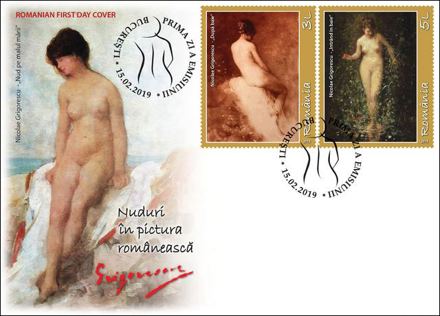
Pictat pe malul M�rii Negre, �n dreptul localit��ii Viile, de l�ng� Constan�a, tabloul a avut drept model un personaj feminin cunoscut sub numele de Zettina Urechia.
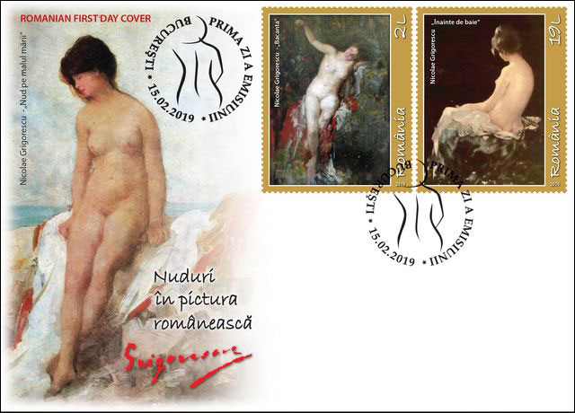
Timbrele au dimensiunea de 42 x 52 mm �i au fost paginate �n coli de 20 de timbre fiind machetate de c�tre Mihail V�m�escu. Au fost tip�rite �n sistem offset la 5 culori pe h�rtie cromo-gumat� (Anglia). �n scop filatelic, emisiunea a fost paginat� �i �n minicoal� de 4 timbre cu man�et� ilustrat� (120 x130 mm), �ntr-un tiraj de 24.800 minicoli (6.200 serii). Sursa: Comunicat de pres� de la Romfilatelia.
Tirajul minicoli�elor apare ca fiind foarte mic, lucru ce poate fi �ns� explicat prin valoarea lor facial� ridicat� (124 Lei), ceea ce reduce imediat num�rul cump�r�torilor. Se cunosc �i minicoli�e �n care c�te dou� timbre de jos au fost indep�rtate, pentru a se �njum�t��i pre�ul, p�str�ndu-se �ns� reproducerea de sus, f�r� valoare facial�. Aceasta m�re�te num�rul cum�p�r�torilor, dar mic�oreaz� �n acela�i timp num�rul minicoli�elor r�mase �ntregi, probabil c� spre bucuria celor care au investit pentru ca s� le aib� neatinse. Oricum ar fi, timpul "timbrelor pentru mase" sunt deja �ntr-un trecut �ndep�rtat...
A� mai men�iona c�, de�i nu mai colec�ionez timbre, prefer�nd doar s� scriu despre ele, am cump�rat totu�i aceste minicoli�e (pe eBay, pl�tind $ 35, cu cheltuielile postale incluse). �n acest fel am intrat, f�r� s� �tiu dinainte, �n jocul �ntreprinderii Romfilatelia, care se bazeaz� pe rom�nii afla�i �n strainatate pentru a-�i realiza profiturile financiare. Ceea ce este din punct de vedere financiar prea mult pentru majoritatea filateli�tilor din �ar� este considerat cumva acceptabil pentru mul�i dintre cei afla�i �n str�inatate. S� nu uitam c� recent Ministerul de Externe din Rom�nia a cerut tuturor ambasadelor sale s� totalizeze �i informeze despre c��i cet��eni rom�ni au emigrat. Totalul general este de 5,6 milioane, adic� circa o treime din c��i rom�ni se afl� �n Rom�nia de azi. Sursa.
Actualizare
Dup� c�tva timp scurs de c�nd am primit coli�ele, le-am mutat �ntr-un clasor cu alte coli�e ce reproduc nuduri. Din p�cate ele au "p�lit" imediat �n prezen�a unor coli�e emise de Principatul Liechtenstein �n 1977, imprimate de Imprimeria de stat din Austria �i dedicate anivers�rii a 400 de ani de la na�terea lui Rubens. Diferen�ele provin din aceea c� m�rcile din Liechtenstein sunt gravare �i apoi imprimate �ntr-o calitate �nalt�, de�i au fost emise cu peste 40 de ani �naintea m�rcilor rom�ne�ti. Scanul de mai jos, care reproduce jum�tatea de jos a minicoalei, nefiind �n relief, nu dezv�luie dec�t o parte a frumuse�ii coli�ei gravate din Liechtensein. Pe l�ng� aceste m�rci reproducerile dup� Grigorescu, de�i foarte frumoase, apar ca fiind fade. Desigur c� gama cromatic� mai larg� a picturii lui Rubens a contribuit �i ea la diferen�a de impact vizual al minicoli�elor respective.
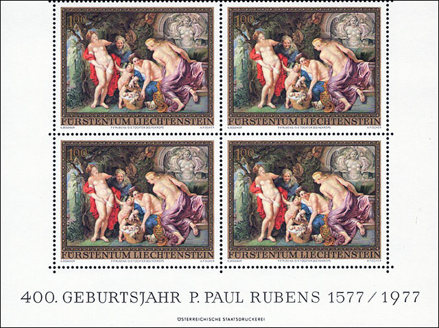
ANEX�
Aceast� Anex� pune la dispozi�ie informa�ii suplimentare despre operele de art� reproduse pe minicoli�ele rom�ne�ti.
Nudurile �n opera lui Nicolae Grigorescu
Nudurile au reprezentat un motiv mai pu�in folosit �n opera lui Nicolae Grigorescu. Dup� momentul studiilor de Paris, motivul nudului a fost din ce �n ce mai rar abordat de c�tre pictorul rom�n. Dup� ceva vreme, motivul a revenit �n crea�ia grigorescian�, a devenit mai frecvent. De aceast� dat�, nudurile nu mai sugereaz� un aspect de castitate, pu�in�tatea formelor din picturile cu ��rance fiind abandonate.
Modelele care-l atr�geau cel mai mult pe Nicolae Grigorescu, erau cele delicate, �nc� neformate, zvelte �i ml�dioase, zurlii, �n care totul era numai promisiune �i nimic ajuns la maturitate, a�a cum �n mediul rural sunt codanele cu v�rsta �ntre treisprezece �i cincispreceze ani. Dar nici cu aceast� viziune asupra femeilor �i a tinere�ii lor, artistul nu era pe deplin mul�umit. Adesea, membrele inferioare �i uneori bra�ele, de�i se prefer� a fi lungi ?i sub�iri, pentru pictor erau dispropor?ionate, ele neav�nd niciun suport �n realitate. �n concep�ia lui Nicolae Grigorescu, trupul copil�resc pe care-l �nf��i�a cu elemente pl�p�nde �i delicate, chiar feciorelnice uneori, va face ca orice atitudine feminin� s� fie plin� de gra�ie �i de ging�ie. El era convins c� o astfel de reprezentare neprih�nit� nu o poate avea o femeie cu forme pline, tumultuoase.
Nicolae Grigorescu a pictat �i femei ale c�ror forme erau nest�vilite �n nudurile pe care le-a f�cut, cu toate c� nu se poate spune c� aceast� tematic� l-ar fi incitat �n mod special. Se �tie c� �n atelierul lui S�bastien Cornu, unde a studiat �i Grigorescu, se f�ceau �edin�e de pictur� dup� model gol. A�a este lucrarea intitulat� Izvorul de la Muzeul de Art� din Bra�ov �i schi�a pentru o scen� antic� sau biblic� denumit� Dup� baie de la Muzeul Na�ional de Art� al Rom�niei. Dup� momentul studiilor de Paris, motivul nudului a fost din ce �n ce mai rar abordat de c�tre pictorul rom�n. Dup� ceva vreme, motivul a revenit �n crea�ia grigorescian�, a devenit mai frecvent. De aceast� dat�, nudurile nu mai sugereaz� un aspect de castitate, recte - pu�in�tatea formelor din picturile cu ��r�nci. Nudul din Colec�a Elena �i Dr. I. Dona, intitulat Nud la malul m�rii, este foarte probabil a fi fost f�cut pe plaj� la Constan�a. O compozi�ie asem�n�toare este �i nudul de la Muzeul Zambaccian. George Oprescu a opinat c� persoana care a pozat goal� nu poate fi un model de profesie, deoarece are fa�a acoperit�, masc�nd-o, ea nedorind s� se �tie c� pozat goal� �n fa�a lui Grigorescu.
Cele dou� modele, ca �i cel din pictura Intr�nd �n ap�, din colec�ia Muzeului Simu, au o vechime mai mare, au formele mai generoase dec�t orice ��ranc� figurat� de Grigorescu �n portretele sau peisajele sale. Celor descrise p�n� acum li se mai adaug� cel denumit �nainte de baie, cel v�zut din spate �i cel numit Nud de Alexandru Vlahu��, care ast�zi este cunoscut sub numele Dup� baie.
Cel mai reu�it dintre toate nudurile pe care le-a pictat este cel denumit Bancanta. Este un tablou de dimensiune mijlocie �i a fost pictat cu o pasiune �i o c�ldur� ce s-au transmis �n �ntregime acestei buc�ti remarcabile. Artistul a reu�it s� armonizeze plastic toate elementele compozi�ionale ale imaginii �nf��i�ate, chiar �i am�nuntele surprinse pe figura sur�z�toare, �ntr-un extaz exprimat f�r� nicio re�inere.
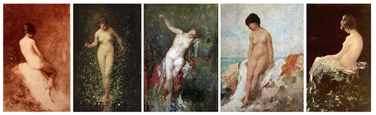
Apropiate ca aspect fizic, cu forme pl�p�nde, de ��r�ncile din motivul portretelor rurale, mai exist� dou� nuduri. Cel numit de Vlahu�� Nimf� dormind, �n care decorul sugereaz� vag ideea de natur�, �i F�r� grij� �n care apare o copil� a�ezat� pe spate, f�r� nicio re�inere. Cast� �n goliciunea ei, ea ridic� o floare cu ambele m�ini la nivelul ochilor �i o prive�te. Se poate constata c� �ntre figura excitant� �i provocatoare a Bancantei, prin compara�ie cu fizionomia acestei copil, exist� o mare diferen��. Fiecare permite sesizarea aspectelor principale �n reflexia imaginii femeii �n psihologia complex� a artistului rom�n. Sursa.